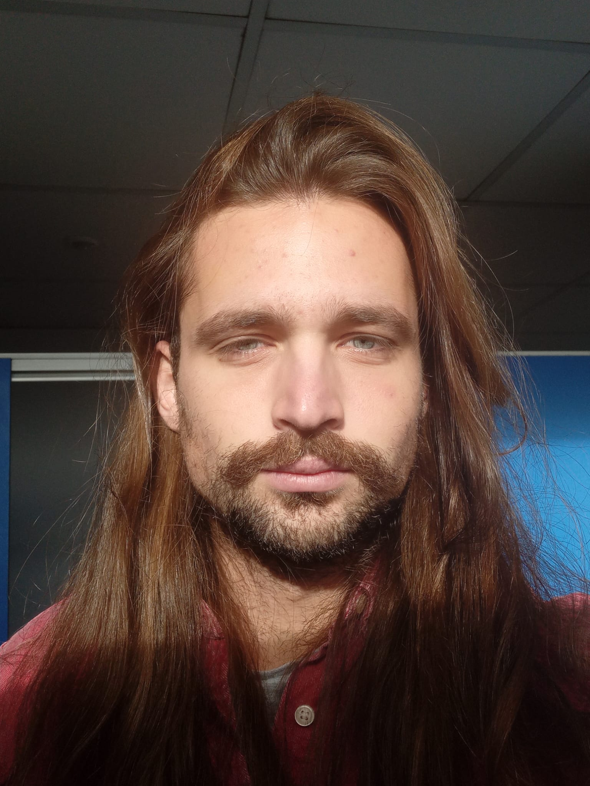

Hello, I'm
Nikola Vračević
A geodata science graduate with extensive expertise across diverse (geospatial) domains and a broad technical skill set, complemented by hands-on experience in data engineering - a field I particularly enjoyed. In general, I am fond of getting to know the world through the lens of (geospatial) data. If data or AI is not on the table, I prefer spending time in biergartens and immersing myself in the local cultures around the World.